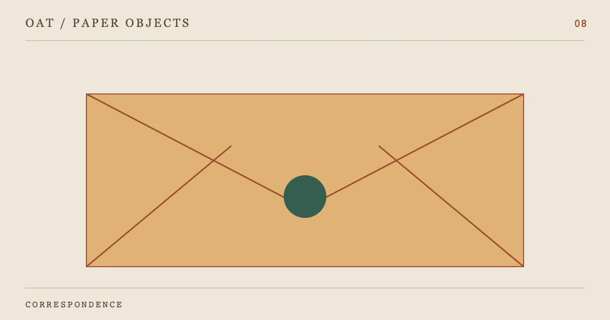

DESK NOTE / 08
~N8_TITLE~
~N8_INTRO~
01~N8_H2_1~
~N8_TEXT_1~
02~N8_H2_2~
~N8_TEXT_2~
小屏可在表格内横向滚动。
| ~N8_TABLE_COL_1~ | ~N8_TABLE_COL_2~ | ~N8_TABLE_COL_3~ |
|---|---|---|
| ~N8_TABLE_ROW_1~ | ~N8_TABLE_CELL_1_1~ | ~N8_TABLE_CELL_1_2~ |
| ~N8_TABLE_ROW_2~ | ~N8_TABLE_CELL_2_1~ | ~N8_TABLE_CELL_2_2~ |
| ~N8_TABLE_ROW_3~ | ~N8_TABLE_CELL_3_1~ | ~N8_TABLE_CELL_3_2~ |
03~N8_H2_3~
~N8_TEXT_3~
~N8_QUOTE~
~N8_QUOTE_ATTRIBUTION~
04~N8_H2_4~
~N8_TEXT_4~
05~N8_H2_5~
~N8_TEXT_5~
问题便签
~N8_FAQ_Q1~
~N8_FAQ_A1~
~N8_FAQ_Q2~
~N8_FAQ_A2~
~N8_FAQ_Q3~
~N8_FAQ_A3~
~N8_FAQ_Q4~
~N8_FAQ_A4~
来源页签
- ~N8_SOURCE_LABEL_1~
~N8_SOURCE_NOTE_1~
- ~N8_SOURCE_LABEL_2~
~N8_SOURCE_NOTE_2~
核对日期：